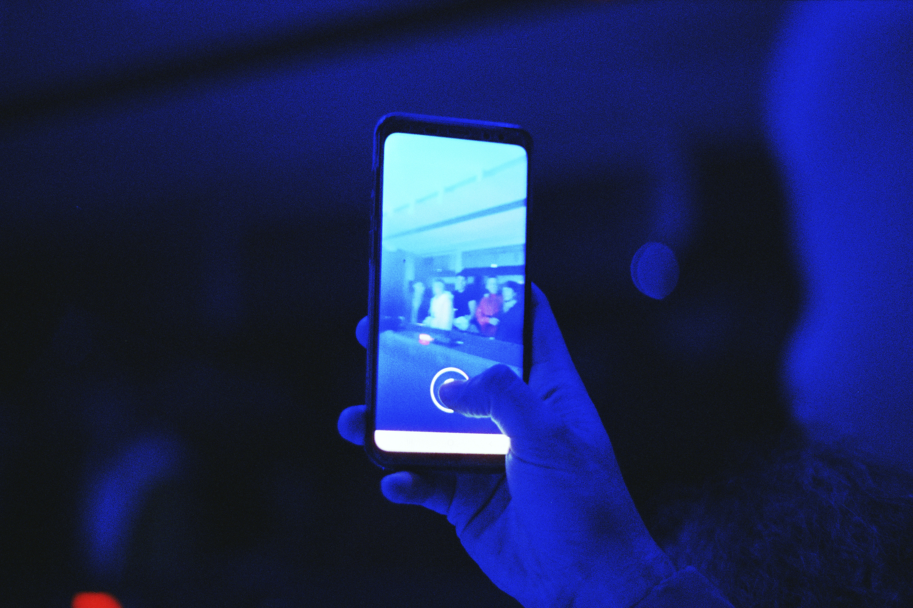

Sometimes to be a step ahead of everybody you should make some step behind.
(Every project here were shooted by using analogic cameras and films)
I’m a young creator looking for experiences
I studied in NABA (Milan) to become an Art Director but I look at everything through the eye of photography
I love mixing differentskills belonging to everyfield of art and design


I’m a good listener. I can work alone and with a team

I’m currently working on some visual identity project for singers and bands.